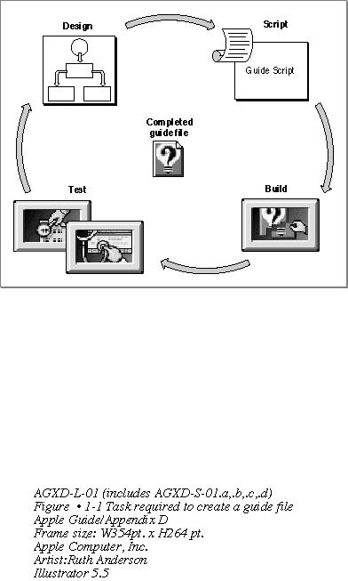

Appendix D - Checklist
This appendix is a checklist you can use to design, script, build, and test guide files; modify and localize them; and integrate them into your application. It consists of a series of actions for accomplishing the given tasks and includes page numbers referring you to information within the book. The first four sections show how to perform the tasks required to create a guide file--designing, scripting, building, and testing--as shown in Figure D-1.Figure D-1 Tasks required to create a guide file

The last section shows three tasks you can perform on your guide files after you complete them. These are
- localizing your guide file
- modifying your guide file using a mixin
- integrating your guide file into your application
Appendix Contents
- D - Designing Your Guide File Content
- D - Scripting Your Source Files
- D - Building Your Guide File
- D - Testing Your Guide File
- D - Additional Guide File Tasks